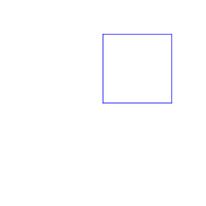
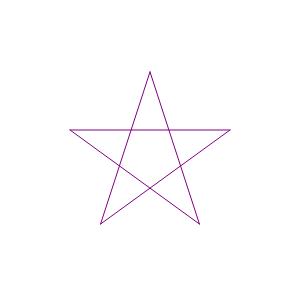
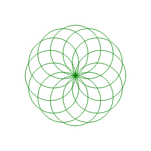
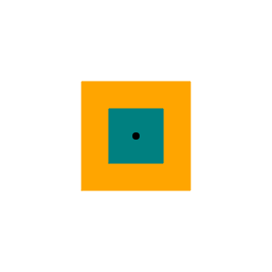
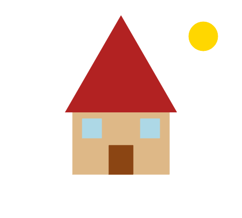

COMP 150-003 · Week 6
Last week's addendum, and the backbone of Assignment 4.
prices = {"milk": 3.25, "eggs": 2.10}
prices["milk"] # 3.25 look up by key
prices["bread"] = 2.50 # add a new pair
prices["milk"] = 3.40 # update an existing key
len(prices) # 3prices["tea"] do? Predict, then run it in Colab.in and .getprices["tea"] # 💥 KeyError: 'tea'
"tea" in prices # False, so check first
prices.get("tea", 0) # 0: the value, or a default if missing.get(key, default) is the workhorse. It makes "never seen this key before" and "seen it a hundred times" the same line of code. You'll use it in every Assignment 4 problem.for item in prices: # keys
print(item)
for item, price in prices.items(): # keys and values together
print(item, "costs", price)
for item in sorted(prices): # keys in alphabetical order
print(item)sorted(...): dictionaries keep insertion order, so when you need a predictable order (like breaking a tie alphabetically), loop over sorted(the_dict).votes = ["pizza", "tacos", "pizza"]
counts = {}
for v in votes:
counts[v] = counts.get(v, 0) + 1 # old count (or 0) plus one
# counts == {"pizza": 2, "tacos": 1}v, counts.get(v, 0), and counts after. Three rows. Then run it and check.visits = [
{"patient": "A1", "symptom": "fever"},
{"patient": "A2", "symptom": "cough"},
{"patient": "A3", "symptom": "fever"},
]
for visit in visits:
print(visit["symptom"]) # each record is a dictionary(0, 0), facing right. You give it instructions like "go forward 100" or "turn left 90", and it draws as it moves.!pip install -q ColabTurtlePlus then from ColabTurtlePlus.Turtle import * once, and start every drawing cell with clearscreen().(0, 0) is the middle.0 = east · 90 = north · 180 = west · 270 = south.circle(r) does not draw around the turtle. It starts at the turtle's spot, the bottom of the circle, and curves to the left. To center a circle on (x, y), start at (x, y - r).setheading(90) then forward(100). Which way did it go? Then try 180 and 270.clearscreen()
setup(300, 300)
pencolor("blue")
for _ in range(4):
forward(100)
left(90)
penup(); goto(-80, 20); pendown()
pencolor("purple")
for _ in range(5):
forward(160)
right(144)
pencolor("green")
for _ in range(12):
circle(50)
left(30)
def draw_square(x, y, size, color):
# jump to the bottom-left corner:
# half the size left and down
penup()
goto(x - size / 2, y - size / 2)
setheading(0)
pendown()
fillcolor(color)
pencolor(color)
begin_fill()
for _ in range(4):
forward(size)
left(90)
end_fill()
house = [
{"type": "rectangle", "x": 0, "y": -60,
"width": 200, "height": 150, "color": "burlywood"},
{"type": "triangle", "x": 0, "y": 60,
"size": 230, "color": "firebrick"},
...
]
for spec in house:
draw_shape(spec)
class Square:
def __init__(self, x, y, size, color):
self.x, self.y = x, y # remember where I am
self.size, self.color = size, color
def draw(self):
draw_square(self.x, self.y, self.size, self.color)
def area(self):
return self.size * self.size
roof_window = Square(0, 20, 30, "lightblue")
roof_window.draw()x, size, …) travels with its behavior (draw, area). It's optional this week, and it's especially handy when a picture has many shapes of the same kind.cheapest_item milk $3.25, eggs $2.10, and bread $2.50, it should say eggs."assertdef test(expected, actual, test_name):
""" Print the result of a test. """
linenum = sys._getframe(1).f_lineno
did_pass = expected == actual
result = "PASSED" if did_pass else "FAILED"
print(f"Test '{test_name}' at line {linenum} {result}.")
if not did_pass:
print(f" Expected: {expected}")
print(f" Actual: {actual}")assert just crashes: AssertionError, with no hint about what you got.test() tells you: Test 'tie' at line 4 FAILED. · Expected: Ana · Actual: Cy. That's a clue, not a crash.▶ Run it yourself: Week 6 TDD worked example (Colab)
def cheapest_item(prices):
# find the item with the lowest price
# if two items tie, pick the one that comes first alphabetically
# if there are no items, return None
pass
# normal: three items with one clear cheapest
test("eggs", cheapest_item({"milk": 3.25, "eggs": 2.10, "bread": 2.50}), "normal")
# special: a tie must go to the alphabetically first item
test("apple", cheapest_item({"pear": 1.0, "apple": 1.0}), "special: tie")
# edge: an empty store has no cheapest item
test(None, cheapest_item({}), "edge: empty")Test 'normal' FAILED.
Expected: eggs
Actual: None
Test 'special: tie' FAILED.
Expected: apple
Actual: None
Test 'edge: empty' PASSED.def cheapest_item(prices):
best = None
for item in prices:
if best is None or prices[item] < prices[best]:
best = item
return bestTest 'normal' PASSED.
Test 'special: tie' FAILED.
Expected: apple
Actual: pear
Test 'edge: empty' PASSED.< never replaces a tie.def cheapest_item(prices):
best = None
for item in sorted(prices): # visit items alphabetically, so ties go to the first name
if best is None or prices[item] < prices[best]:
best = item
return bestTest 'normal' PASSED.
Test 'special: tie' PASSED.
Test 'edge: empty' PASSED.The turtle shows you what your code does.
Tests written first prove it does what you meant.